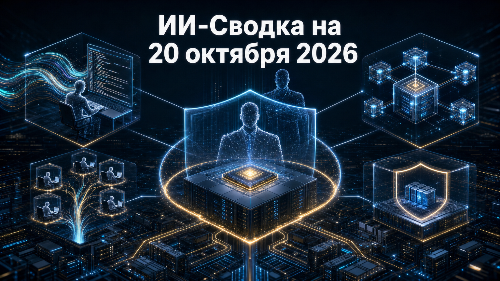

Новостей сегодня меньше, чем обычно
Свежая повестка сосредоточена на двух слоях внедрения ИИ: инфраструктуре для дешёвого inference и управлении агентами, которым дают доступ к корпоративному коду, данным и инструментам. Microsoft предлагает рассматривать таких агентов как потенциальную внутреннюю угрозу, а разработчики coding-сред усиливают контроль MCP, плагинов, телеметрии и автономных режимов.
Отдельный рыночный сигнал пришёл от Tenstorrent: крупный раунд финансирования показывает, что инвесторы продолжают искать альтернативы доминирующим поставщикам ускорителей, особенно для обслуживания open-weight моделей.
Tenstorrent привлекла $1,5 млрд при оценке $6,2 млрд. По данным TechCrunch, компания намерена масштабировать чипы и серверы для обслуживания open-weight моделей и генерации видео; среди названных инвесторов — Trace Capital, Innovation X, Cadence Ventures, Eclipse, Fidelity, SanDisk и T. Rowe Price.
Для рынка это крупная ставка на разделение обучения и inference: не все рабочие нагрузки требуют универсальных GPU-кластеров. Однако раунд сам по себе не доказывает конкурентоспособность продукции Tenstorrent по цене, производительности или доступности ПО: эти параметры потребуют независимой проверки в реальных развёртываниях.
Microsoft в публикации Securing the agentic insider описала подход Guardian Agents в рамках Project Perception. Компания предлагает считать корпоративных агентов ИИ потенциальными «внутренними угрозами»: даже легитимный агент может получить слишком широкие права, неверно интерпретировать задачу или действовать вопреки внутренним правилам.
Guardian Agents должны постоянно оценивать риск до выполнения действия, используя сигналы из систем идентификации, данных, облака, конечных устройств, сети и runtime-среды. В ответ они могут ограничивать разрешения или изолировать действия агента. Это пока архитектурное предложение Microsoft, а не независимая оценка эффективности: компания не раскрыла универсальные метрики точности, доступные SKU или сроки полного внедрения.
GitHub выпустила Copilot CLI 1.0.100. В версии появился флаг --disable-client-telemetry, позволяющий отключить отправку клиентской телеметрии, а также одноразовое доверие к папке для запусков в prompt-режиме. Добавлена установка проверенных Skills и плагинов по GitHub install links.
Релиз также исправляет зависание сессий при загрузке инструментов MCP-сервера, уточняет работу sandbox, управляемых плагинов и корпоративных разрешений. Для онлайн-сессий semantic code search теперь включён по умолчанию. Практический смысл обновления — снизить трение между требованиями приватности, централизованными политиками и ежедневной работой с агентом ИИ, хотя это всё же очередной, а не радикально новый релиз CLI.
Mistral выпустила Vibe 3.0.0, крупное обновление своей open-source среды агентной разработки. Desktop-клиент получил импорт проектов и сессий из другого coding agent при первоначальной настройке; в CLI появились ветвление возобновляемых сессий, расширенный headless-режим с JSON-результатами и управление фоновыми задачами.
Для организаций существеннее другой пункт: managed configuration может запретить пользователям операции с MCP-серверами, включая серверы, предоставленные плагинами. Это отражает сдвиг от выбора отдельной модели к управлению всей средой исполнения: коннекторами, субагентами, контекстом и правами. Возможности заявлены разработчиком в release notes, без независимой оценки их надёжности или распространённости.
По данным описания версии Claude Code 2.1.304, Anthropic добавила команду /auto-mode-setup. Она анализирует проект и недавние сессии, чтобы помочь настроить auto mode. Появился и инструмент /claude-api managed-agents-secure, который сопоставляет конфигурацию Managed Agents с руководством Anthropic по безопасности, не меняя настройки самостоятельно.
В релиз также вошли более наблюдаемые plugin hooks, ограничение одобрений режимом person и отображение ранее вызванных инструментов в summary compaction. Это полезно для команд, которым нужно одновременно повышать автономность coding-агента и сохранять аудит его действий. Но речь идёт о частом инкрементальном обновлении; сведения о возможностях основаны на release notes, а не на независимом тестировании.